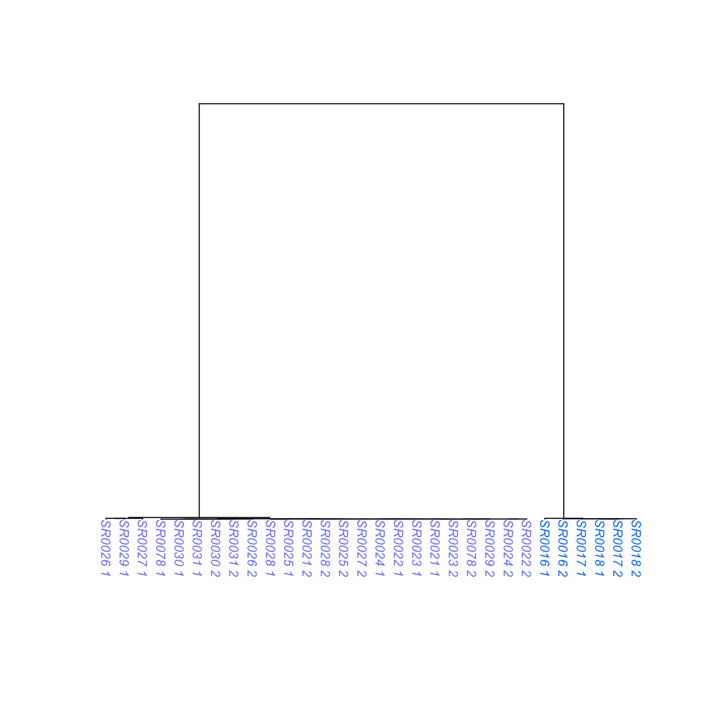
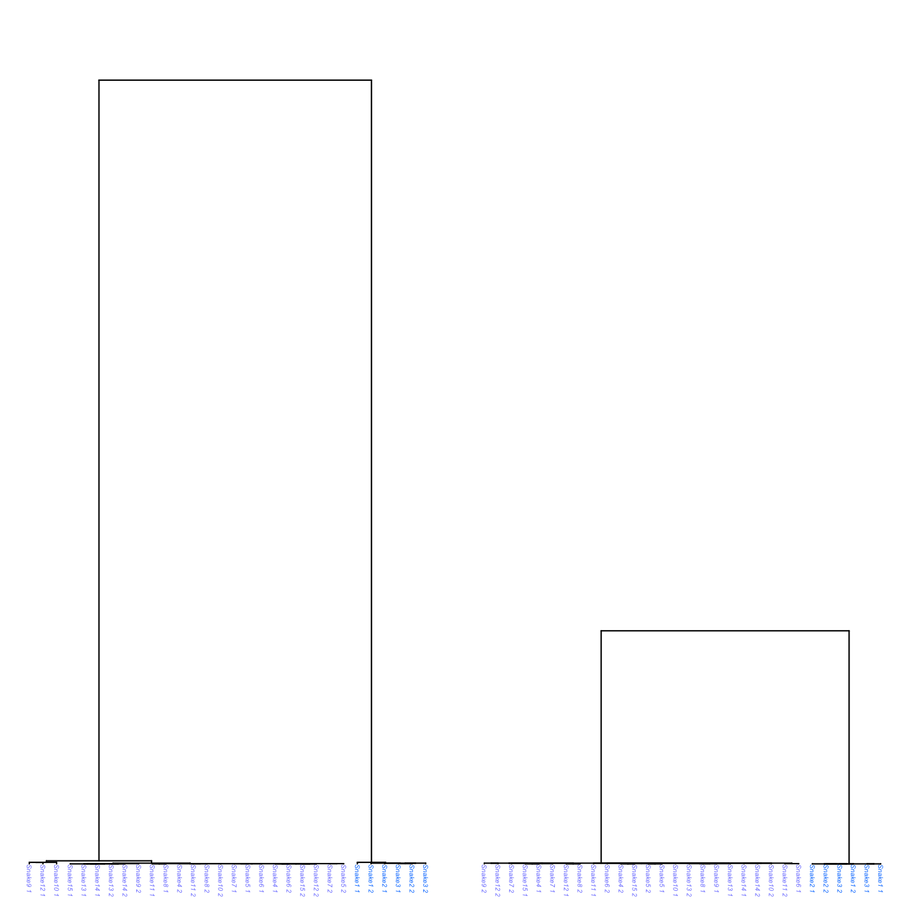
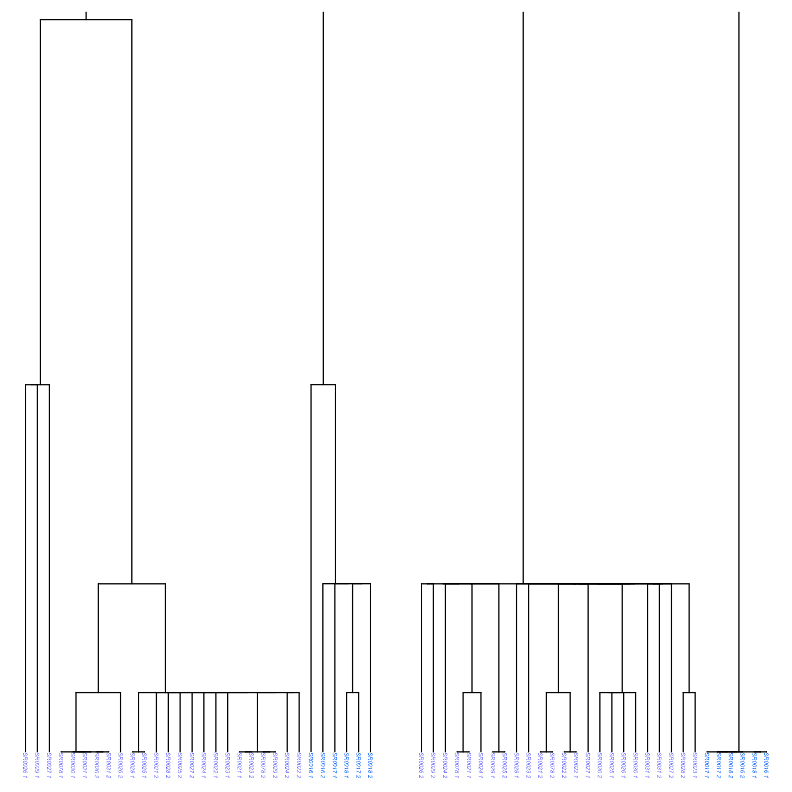

Written by: Keaka Farleigh, Ph.D.
Date: September, 22nd, 2026.
Date last modified: September, 22nd, 2026
Purpose
To show you how to use ARGHelpR to summarize ancestral recombination graphs (ARGs), identify ARGs that may be indicative of selection influencing a particular region, identify ARGs that may shown signs of introgression, and visualize these results.
Note. in this vignette we infer ARGs that represent regions influenced by selection and those that represent introgressed regions. This is only for the purposes of showing you how ARGHelpR works. You must understand you study system and determine which of these analyses are appropriate. For example, is there support for introgression or divergence? Please email Keaka Farleigh if you have any questions.
Please see the What’s an ARG article if you would like some background on ARGs.
This vignette will proceed in five steps:
- Inspect data and prepare it for analysis
- Calculate ARG statistics
- Identify divergence candidates
- Identify introgression and balancing selection candidates
- Visualize ARGs
1. Inspect data
ARGHelpR expects data to be a list where each element is a data frame containing information for a particular ARG; the first column is named chromosome and indicates the chromosome, the second column is named start indicates the start position of an ARG, the third position is named end indicates the end position of the ARG, and the fourth column is named tree and indicates the ARG itself. This is best represented as a bed file. You can find example scripts to convert your ARG output to a bed file in the format expected by ARGHelpR in the formatting data article.
After we have a bed file, we can read it into R.
# Assuming a bed file with columns named chromosome, start, end, and tree
data <- read.delim("my_argdata.bed", header = TRUE)
# Split each row into a list element
data_list <- split(data, seq_len(nrow(data)))Let’s look at the data already in ARGHelpR. We see that the ARG data
(rattlesnake_args) is a list with many elements and that we
also have a population assignment file (rattlesnake_pops).
The rattlesnake_pops contains population assignment data
for each haplotype in your data. This is why there are _1
and _2 appended to the individual names in our data.
### Load ARGHelpR
library(ARGHelpR)
data("rattlesnake_args")
str(rattlesnake_args, list.len = 3)
#> List of 1000
#> $ 1 :'data.frame': 1 obs. of 4 variables:
#> ..$ chromosome: chr "chr2_scaffold_1_1contigs"
#> ..$ start : int 151119839
#> ..$ end : int 151119908
#> .. [list output truncated]
#> $ 2 :'data.frame': 1 obs. of 4 variables:
#> ..$ chromosome: chr "chr3_scaffold_2_1contigs"
#> ..$ start : int 196576009
#> ..$ end : int 196577098
#> .. [list output truncated]
#> $ 3 :'data.frame': 1 obs. of 4 variables:
#> ..$ chromosome: chr "chr7_scaffold_8_1contigs"
#> ..$ start : int 73689189
#> ..$ end : int 73689388
#> .. [list output truncated]
#> [list output truncated]
data("rattlesnake_pops")
str(rattlesnake_pops)
#> 'data.frame': 30 obs. of 2 variables:
#> $ sample : chr "SR0016_1" "SR0017_1" "SR0018_1" "SR0021_1" ...
#> $ species: chr "pop2" "pop2" "pop2" "pop1" ...Now that we have looked at our data we can calculate some statistics.
2. Calculate ARG statistics
We calculate ARG statistics using the argstats function.
This calculates various statistics, which are explained in the understanding
ARG stats article. The function requires are ARG data
(rattlesnake_args) and population assignment information
rattlesnake_pops. We also supply the names of each
population to help us interpret the output. Users can also supply the
number of cores to use n.cores argument to parallelize the
calculations. While our dataset is small, whole genome data can be very
large and parallelization is the only way to make compute time
reasonable. You can also specify the n.haps argument, which
influences how ARGHelpR calculates the time to the most recent common
ancestor within (TMRCAW) statistic. n.cores and
n.haps are optional.
# Separate by population, this makes the function command easier.
pop2 <- rattlesnake_pops[which(rattlesnake_pops$species == "pop2"),]
pop1 <- rattlesnake_pops[which(rattlesnake_pops$species == "pop1"),]
# Run the analysis, single core takes about 3 minutes on a machine with 16 Gb of RAM
snake_argstats <- argstats(arg.dat = rattlesnake_args, pop1 = pop1$sample, pop2 = pop2$sample, pop1.name = "pop1", pop2.name = "pop2")
# Bind into a single data frame
snake_argstats_df <- do.call("rbind", snake_argstats)
# Inspect the statistics
head(snake_argstats_df)
#> chromosome start end tmrca tmrca.50 rth
#> 1 chr2_scaffold_1_1contigs 151119839 151119908 483196.7 515.9 0.0010676811
#> 2 chr3_scaffold_2_1contigs 196576009 196577098 143746.0 515.9 0.0035889694
#> 3 chr7_scaffold_8_1contigs 73689189 73689388 263567.0 83.4 0.0003164281
#> 4 chr9_scaffold_9_1contigs 4057289 4057388 263567.0 1028.9 0.0039037512
#> 5 chr5_scaffold_6_1contigs 19600089 19600188 483196.6 83.3 0.0001723936
#> 6 chr1_scaffold_3_3contigs 265011529 265011538 483196.7 236.0 0.0004884139
#> pop1.meantmrcaw pop1.mediantmrcaw pop1.mintmrcaw pop1.maxtmrcaw pop1.mono
#> 1 3684.0000 3684.00 515.9 6852.1 FALSE
#> 2 1241.8500 1499.05 0.1 1969.2 FALSE
#> 3 118.1000 118.10 0.1 236.1 FALSE
#> 4 1331.9000 1969.20 236.0 1969.2 FALSE
#> 5 90.2375 83.30 0.0 236.0 FALSE
#> 6 1284.2000 159.70 0.1 3692.8 FALSE
#> pop2.meantmrcaw pop2.mediantmrcaw pop2.mintmrcaw pop2.maxtmrcaw pop2.mono
#> 1 83.30 83.30 83.3 83.3 FALSE
#> 2 258.00 258.00 0.1 515.9 FALSE
#> 3 23257.40 23257.40 23257.4 23257.4 FALSE
#> 4 515.90 515.90 515.9 515.9 FALSE
#> 5 0.00 0.00 0.0 0.0 FALSE
#> 6 0.05 0.05 0.0 0.1 FALSE
#> pop1 pop2
#> 1 pop1 pop2
#> 2 pop1 pop2
#> 3 pop1 pop2
#> 4 pop1 pop2
#> 5 pop1 pop2
#> 6 pop1 pop2
#> tree
#> 1 ((SR0016_2:23257.3,(SR0024_1:6852.0,(SR0016_1:1969.1,(SR0023_1:1028.8,((SR0018_2:83.3,(SR0017_2:83.3,(SR0017_1:83.3,SR0018_1:83.3):0.0):0.0):432.6,((SR0030_1:83.3,SR0030_2:83.3):432.6,(SR0022_2:515.8,((SR0022_1:0.0,SR0029_1:0.0):515.8,((SR0078_2:515.8,(SR0029_2:515.8,(SR0028_2:236.0,(SR0025_2:83.3,SR0025_1:83.3):152.7):279.9):0.0):0.0,((SR0027_1:83.3,(SR0026_1:0.0,(SR0078_1:0.0,(SR0027_2:0.0,SR0026_2:0.0):0.0):0.0):83.3):432.6,(SR0028_1:515.8,(SR0031_2:83.3,SR0031_1:83.3):432.6):0.0):0.0):0.0):0.0):0.0):0.0):513.0):940.3):4882.8):16405.4):459939.3[&&NHX:coal_time=483196.6],(SR0023_2:6852.0,(SR0024_2:1028.8,(SR0021_2:83.3,SR0021_1:83.3):945.5):5823.1):476344.6[&&NHX:recomb_time=483196.6]);
#> 2 ((((SR0024_1:1969.1,(SR0078_2:1969.1,SR0024_2:1969.1):0.0):0.0,((SR0016_1:1969.1,(SR0031_2:1969.1,(SR0023_2:1028.8,(SR0029_1:1028.8,((SR0028_1:515.8,SR0022_1:515.8):0.0,((SR0025_2:236.0,SR0022_2:236.0):0.0,(SR0029_2:0.0,SR0026_2:0.0):236.0):279.9):513.0):0.0):940.3):0.0):0.0,(SR0028_2:1028.8,(SR0027_2:1028.8,((SR0023_1:83.3,SR0026_1:83.3):152.7,(SR0025_1:236.0,(SR0078_1:236.0,(SR0021_2:236.0,(SR0031_1:236.0,(SR0021_1:236.0,SR0027_1:236.0):0.0):0.0):0.0):0.0):0.0):792.9):0.0):940.3):0.0):0.0,((SR0017_2:0.0,SR0017_1:0.0):1028.8,((SR0018_1:515.8,SR0018_2:515.8):513.0,(SR0030_1:0.0,SR0030_2:0.0):1028.8):0.0):940.3):141776.8[&&NHX:coal_time=42713.5],SR0016_2:143745.9[&&NHX:recomb_time=23257.3]);
#> 3 (((SR0024_2:236.0,((SR0017_2:236.0,(SR0024_1:0.0,(SR0078_1:0.0,(SR0031_1:0.0,(SR0030_1:0.0,(SR0031_2:0.0,SR0030_2:0.0):0.0):0.0):0.0):0.0):236.0):0.0,(SR0078_2:236.0,(SR0023_2:83.3,(SR0022_1:83.3,SR0022_2:83.3):0.0):152.7):0.0):0.0):0.0,((SR0023_1:83.3,SR0026_1:83.3):152.7,(SR0021_1:83.3,SR0021_2:83.3):152.7):0.0):263330.9[&&NHX:recomb_time=12642.8],((SR0018_2:23257.3,(SR0016_1:6852.0,SR0018_1:6852.0):16405.4):0.0,(SR0017_1:12642.8,(SR0016_2:6852.0,(SR0025_1:0.0,(SR0028_1:0.0,((SR0027_2:0.0,(SR0025_2:0.0,(SR0029_2:0.0,SR0027_1:0.0):0.0):0.0):0.0,(SR0029_1:0.0,(SR0028_2:0.0,SR0026_2:0.0):0.0):0.0):0.0):0.0):6852.0):5790.8):10614.5):240309.6[&&NHX:coal_time=78376.5]);
#> 4 (SR0024_2:263566.9[&&NHX:recomb_time=42713.5],(((SR0078_1:1969.1,SR0021_1:1969.1):0.0,((SR0031_1:236.0,SR0030_1:236.0):792.9,(SR0030_2:83.3,SR0031_2:83.3):945.5):940.3):1723.6,(SR0022_2:3692.7,(((SR0018_2:515.8,SR0016_2:515.8):1453.3,(SR0018_1:1969.1,(SR0016_1:515.8,SR0024_1:515.8):1453.3):0.0):1723.6,((SR0022_1:1969.1,SR0025_1:1969.1):1723.6,((SR0021_2:1969.1,(SR0078_2:1969.1,SR0023_2:1969.1):0.0):0.0,(SR0023_1:1028.8,(SR0017_2:1028.8,((SR0017_1:515.8,(SR0026_1:236.0,(SR0028_1:0.0,((SR0028_2:0.0,SR0027_2:0.0):0.0,SR0027_1:0.0):0.0):236.0):279.9):0.0,((SR0029_2:83.3,SR0029_1:83.3):432.6,(SR0025_2:515.8,SR0026_2:515.8):0.0):0.0):513.0):0.0):940.3):1723.6):0.0):0.0):0.0):259874.2)[&&NHX:coal_time=483196.6];
#> 5 ((SR0029_2:1028.8,((SR0025_2:236.0,SR0024_2:236.0):279.9,((SR0030_2:236.0,SR0025_1:236.0):279.9,(SR0078_1:236.0,((SR0027_1:0.0,SR0027_2:0.0):83.3,(((SR0029_1:83.3,(SR0030_1:83.3,SR0028_1:83.3):0.0):0.0,(SR0028_2:83.3,SR0021_1:83.3):0.0):0.0,((SR0031_1:83.3,SR0031_2:83.3):0.0,(((SR0078_2:83.3,(SR0016_1:83.3,((SR0021_2:0.0,SR0023_1:0.0):0.0,(SR0017_1:0.0,(SR0024_1:0.0,(SR0018_1:0.0,SR0016_2:0.0):0.0):0.0):0.0):83.3):0.0):0.0,(SR0026_2:0.0,SR0026_1:0.0):83.3):0.0,(SR0022_2:83.3,SR0022_1:83.3):0.0):0.0):0.0):0.0):152.7):279.9):0.0):513.0):482167.7[&&NHX:recomb_time=263566.9],((SR0023_2:6852.0,SR0018_2:6852.0):0.0,SR0017_2:6852.0):476344.6[&&NHX:coal_time=483196.6]);
#> 6 ((SR0028_1:3692.7,(SR0025_2:515.8,(SR0030_2:83.3,((SR0030_1:0.0,SR0031_1:0.0):0.0,SR0031_2:0.0):83.3):432.6):3176.9):479503.9[&&NHX:recomb_time=263566.9],(((SR0025_1:3692.7,SR0027_1:3692.7):0.0,SR0028_2:3692.7):8950.1,(((SR0024_1:0.0,(SR0078_2:0.0,((SR0023_1:0.0,SR0027_2:0.0):0.0,((SR0024_2:0.0,SR0023_2:0.0):0.0,(SR0026_2:0.0,(SR0017_2:0.0,SR0017_1:0.0):0.0):0.0):0.0):0.0):0.0):515.8,(SR0078_1:236.0,(SR0022_1:236.0,SR0022_2:236.0):0.0):279.9):513.0,((SR0026_1:1028.8,((((SR0029_1:236.0,SR0018_1:236.0):0.0,SR0018_2:236.0):0.0,(SR0016_1:0.0,SR0016_2:0.0):236.0):792.9,SR0029_2:1028.8):0.0):0.0,(SR0021_2:83.3,SR0021_1:83.3):945.5):0.0):11614.0):470553.8[&&NHX:coal_time=263566.9]);Awesome, now we have our data as a data frame. We can use this as
input into identify_argcandidates_divergence and
identify_argcandidates_shared to identify evidence of
selection and/or introgression.
3. Identify divergence candidates
We will use the identify_argcandidates_divergence to
identify ARGs exhibitng patterns that we would expect under different
forms of selection, you can read the identifying
selection and introgression article to understand how each test
works. Briefly, we will use patterns of the time to the most recent
common ancestor between (TMRCAB) and time to the most recent
common ancestor within (TMRCAW) populations/species to
identify possible evidence of selection.
ARGHelpR can identify candidates with or without a user-specified
genomic background (background argument). If the
background argument is supplied then the thresholds are set
based on that, if it is left empty then ARGHelpR uses the supplied
distributions to determine thresholds. Users can also specify their own
thresholds using all of the different threshold
arguments.
divergence_cands <- identify_argcandidates_divergence(dat = snake_argstats_df, analysis = "all")
# Bind together into a data frame
divergence_cands_df <- do.call("rbind", divergence_cands)
# Make a column telling us which scenario each ARG was identified as
divergence_cands_df$scenario <- rownames(divergence_cands_df)
divergence_cands_df$scenario <- sub("\\..*", "", divergence_cands_df$scenario)
# How many of each scenario do we have?
table(divergence_cands_df$scenario)
#>
#> RI RIWP RS WP
#> 51 1 32 37We see that we have ARGs associated with each divergence scenario, supporting that different forms of selection are influencing different regions of the genome.
4. Identify introgression and balancing selection candidates
Now we will use the identify_argcandidates_shared
function to identify signals of balancing selection and introgression.
This works in the same way as
identify_argcandidates_divergence.
intro_cands <- identify_argcandidates_shared(dat = snake_argstats_df, analysis = "all")
# Bind together into a data frame
intro_cands_df <- do.call("rbind", intro_cands)
# Make a column telling us which scenario each ARG was identified as
intro_cands_df$scenario <- rownames(intro_cands_df)
intro_cands_df$scenario <- sub("\\..*", "", intro_cands_df$scenario)
# How many of each scenario do we have?
table(intro_cands_df$scenario)
#>
#> BS INT
#> 51 182We have ARGs associated with expectations under models of balancing selection and introgression.
5. Visualize ARGs
Finally, we will plot the ARGs to show the patterns that we are
identifying. We will use the argplot function. This
function requires an arg (newick string), list of individuals in each
population (pop1 and pop2 arguments), and the
color (col argument) you would like to assign to each
individual. You can also supply a scale and font size if you wish
(scale and font.size arguments). The scale
argument is particularly useful when you want to plot multiple args
together; we will plot a random ARG and a recurrent selection (RS) ARG
to see how this is useful. Remember, recurrent selection is expected to
reduce the TMRCAB and TMRCAW.
# Select an ARG to plot
arg_toplot <- snake_argstats_df[8,19]
single_plot <- argplot(arg_toplot, pop1 = pop1$sample, pop2 = pop2$sample, col = c('#7D83FF', '#007FFF'), font.size = 0.75)
# We can change the scale to
single_plot_scale <- argplot(arg_toplot, pop1 = pop1$sample, pop2 = pop2$sample, col = c('#7D83FF', '#007FFF'), scale = c(0,275000), font.size = 0.75)
# Let's plot a couple of ARGs together
par(mfrow = c(1, 2), mar = c(0.5, 0.5, 0.5, 0.5))
arg_toplot1 <- snake_argstats_df[8,19]
arg_toplot2 <- divergence_cands_df[91,19]
plot1 <- argplot(arg_toplot1, pop1 = pop1$sample, pop2 = pop2$sample, col = c('#7D83FF', '#007FFF'), scale = c(0,275000), font.size = 0.3)
rs_plot <- argplot(arg_toplot2, pop1 = pop1$sample, pop2 = pop2$sample, col = c('#7D83FF', '#007FFF'), scale = c(0,275000), font.size = 0.3)
We see that the recurrent selection ARG does indeed exhibit a reduced TMRCAB, which matches our expectations. What about the tips? The TMRCAW is also supposed to be reduced in one or both populations in a scenario of recurrent selection. We can focus on the ARG tips, by adjusting the scale.
# Let's plot a couple of ARGs together
par(mfrow = c(1, 2), mar = c(0.5, 0.5, 0.5, 0.5))
arg_toplot1 <- snake_argstats_df[8,19]
arg_toplot2 <- divergence_cands_df[91,19]
plot1_tips <- argplot(arg_toplot1, pop1 = pop1$sample, pop2 = pop2$sample, col = c('#7D83FF', '#007FFF'), scale = c(0,1000), font.size = 0.3)
rs_plot_tips <- argplot(arg_toplot2, pop1 = pop1$sample, pop2 = pop2$sample, col = c('#7D83FF', '#007FFF'), scale = c(0,1000), font.size = 0.3)
We see that the TMRCAW is also reduced relative to the background in pop 2, thus confirming that the recurrent selection ARG matches our expected patterns of TMRCAB and TMRCAW.
Thank you for your interest in ARGHelpR, please contact Keaka Farleigh if you have any questions or suggestions.